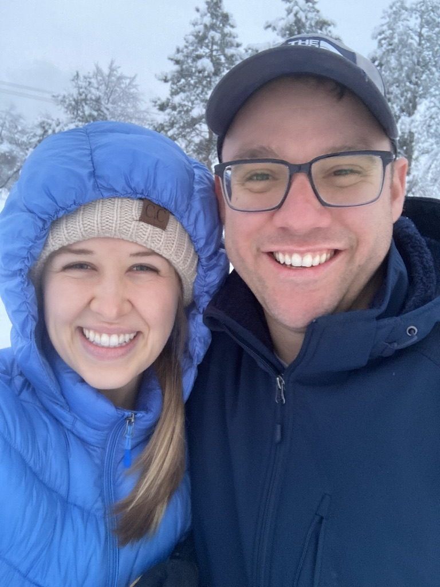

Doug Hatch | WDD 130
My name is Doug Hatch and I am from the United States. I am currently living in Provo, Utah and love to get out and have fun outdoors!
My name is Doug Hatch and I am from the United States. I am currently living in Provo, Utah and love to get out and have fun outdoors!